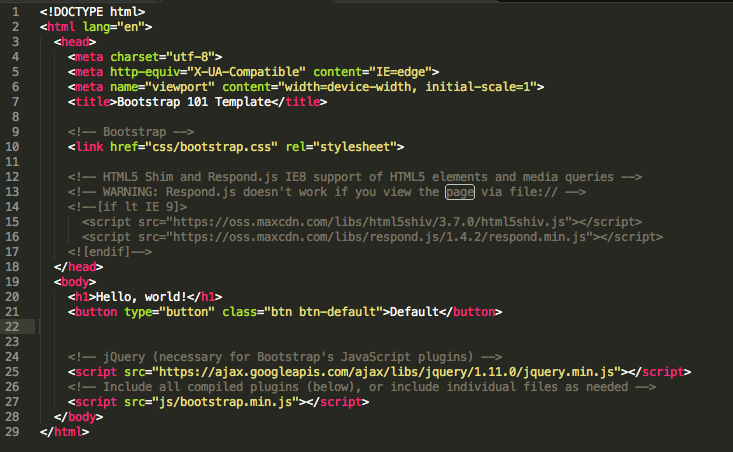
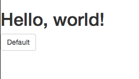
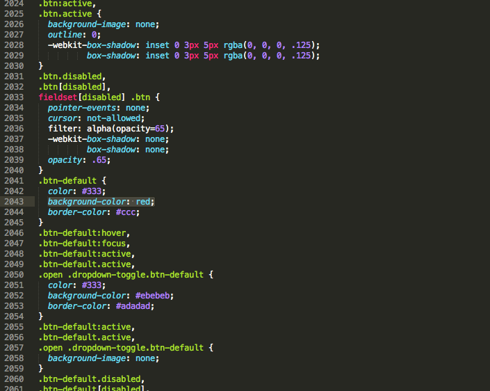
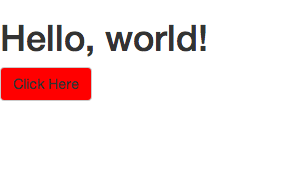

Bootstrap makes front-end web development faster and easier. It's made for folks of all skill levels, devices of all shapes, and projects of all sizes.
1. Get familiar with very basic HTML and CSS so you know the structure of building a website. I personally recommend the codeacademy course if you are not already familiar with this.
2. Click Here to download Bootstrap. Or visit the Bootstrap website and press Download Bootstrap.
3. Create a new folder for your project. Unzip the Bootstrap file you downloaded and copy its contents into your project folder.
4. Download the basic Bootstrap template by right-clicking or ctrl-clicking HERE and saving the file to your computer in the folder for your project.
5. Open the file with a text editor of your choice. Visit the boostrap CSS page, Components, and JavaScript page in order to see elements that you can add to your webpage.
6. Find an element that you want to add to your page, for this example we'll be adding a standard button. See it on the boostrap website HERE.
7. Copy and paste the given code into the body of your HTML template.

If you open your page in the browser there should now be a button that says "Default".

8. Now edit the code to fit you needs. Let's change the text of the button to say "Click Here".
9. Let's also change the color of the button to red. In order to do this we must edit the CSS files that we downloaded with Bootstrap. Open up the stylesheet that you are using in your HTML file, in this case it is "css/bootstrap.css". And search for the class that corresponds to the element you are trying to change, in this case "btn-default". Use the find feature in your text editor as the CSS file is very long. Once you have found that tag, scroll through the CSS file looking for the attribute that you are trying to change that belongs to that tag, in this case we are looking for "background-color". Now change the CSS to reflect the change you want to make.

10. Reload the page in your browser and it should reflect the changes you made.

You are now ready to start creating webpages using Bootstrap!